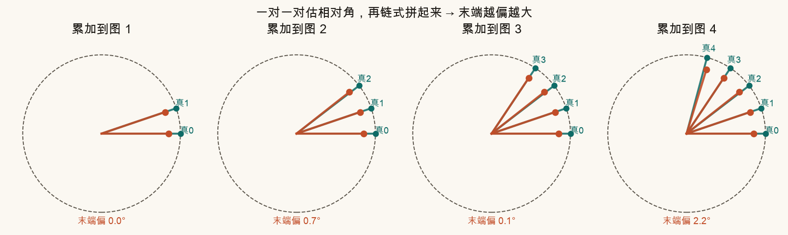
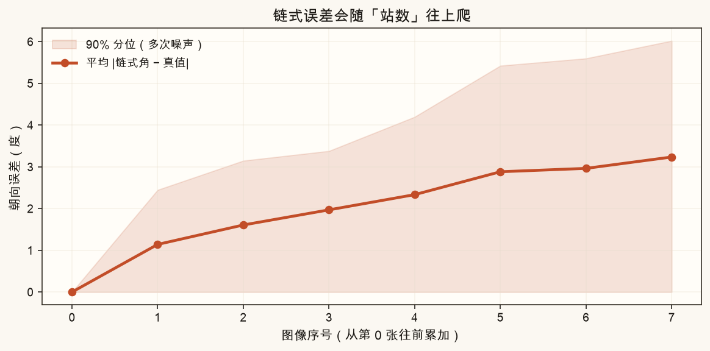
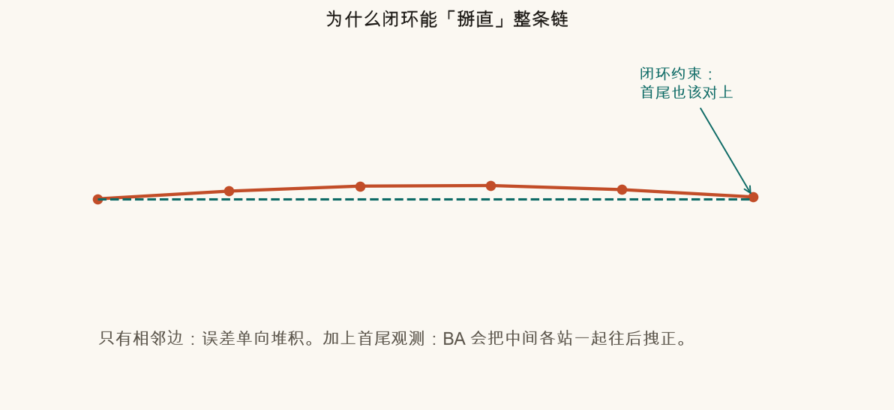
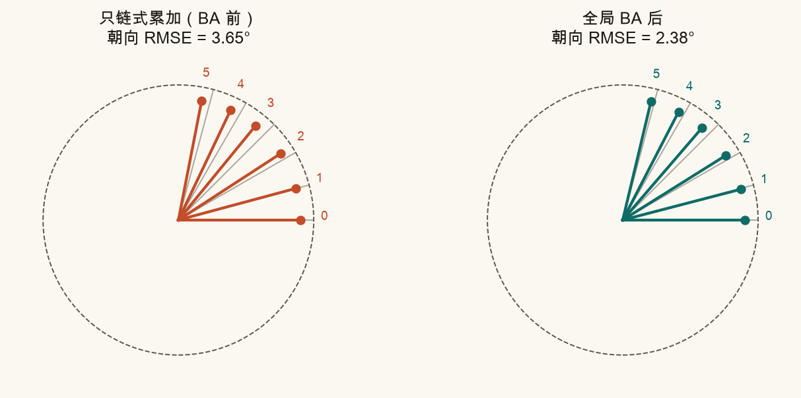
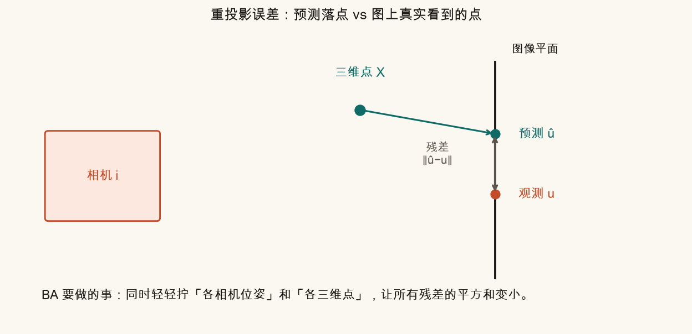
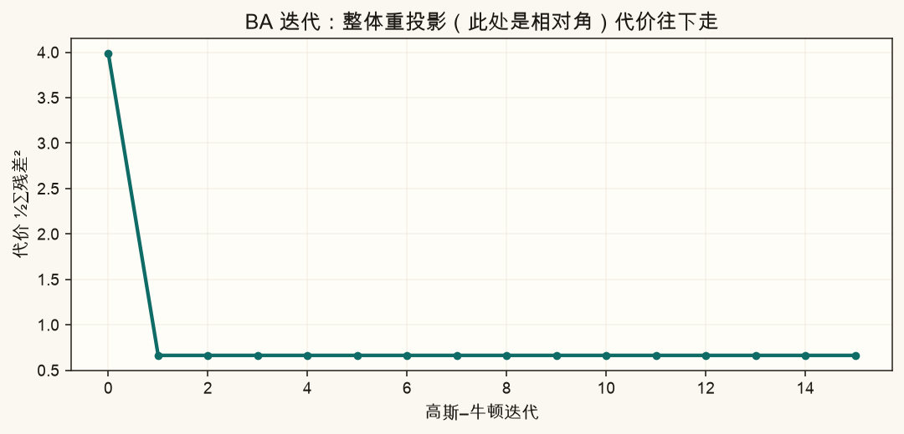
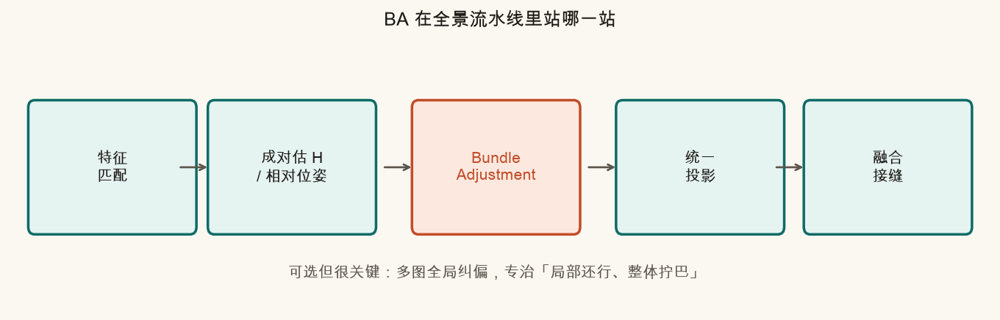
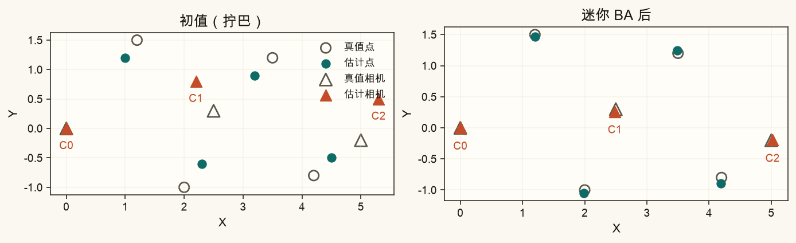
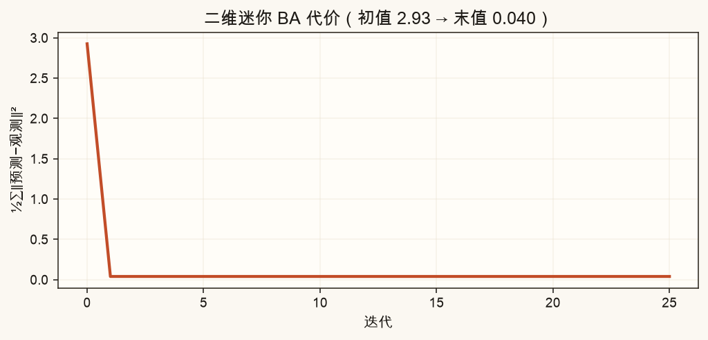

第 12 篇 · 全局纠偏 · 约 55 分钟
前面几篇你会「两张图估一个 H」。多张图首尾相接时，小误差会像电话传话一样越积越大。这一篇用白话讲 Bundle Adjustment（捆绑调整，简称 BA）：同时微调各相机位姿和空间点，让整体重投影误差变小。不要求你手写大型稀疏求解器——我们用小规模数值把直觉钉牢。
全景拍摄时，你通常会拍一串有重叠的照片：图 0、图 1、图 2……图 N。最直观的做法是：
H01（把图 1 变到图 0）；H12（图 2 → 图 1）；H02 ≈ H01 · H12；麻烦在于：每一对估出的 H 都带着一点点噪声（匹配点不准、RANSAC 没剔干净、场景不完全共面……）。这些小误差同向叠加时，末端会漂得很远——就像一队人报数，每人偏 1°，到第十人可能已经偏了将近 10°。


360° 全景更残酷：你希望首尾也能接上。若只做链式累加，绕一圈后首尾往往对不上——画面会出现「裂缝」或「重叠错位」。后面会看到：闭环观测正好给 BA 一根「把整条链掰直」的杠杆。
Bundle 可以想成「一捆」：一捆相机位姿、一捆三维点（或柱面/球面上的方位）。Adjustment 就是微调。合起来：
同时轻轻拧动「各相机怎么摆」和「各点在世界里在哪」，让所有观测的预测位置尽量贴近图像上真正看到的位置。
对比一下两种策略：


本篇全景示意里，我们把每张图简化成一个朝向角（像相机绕竖直轴转了多少度）。真实系统里位姿是 6 自由度（旋转+平移），点是三维的；数学更胖，但「一起拧、让残差变小」这件事是一样的。
先记住三个角色：
u。给定当前的「位姿猜测」和「点位置猜测」，你可以正着算一遍：这个点应该投到图像的哪里——叫预测投影 û。它和观测 u 的差距就是重投影误差：
残差 e = û − u （向量；常看 ‖e‖ 或 ‖e‖²）
BA 的目标函数（白话版）就是：把所有「相机–点」观测的残差平方加起来，找一组参数让这个总和尽量小。

为什么「点和位姿都要动」？只动位姿、把点冻死，有时也能改善；但点的初值同样不准（三角化有噪声）。两边一起微调，通常比只拧一边更贴观测。这就是「捆绑」二字的含义。

回顾图片拼接的大流程（第 8 篇会展开）：找特征 → 匹配 → 估相对几何 → （可选）全局优化 → 投影到画布 → 曝光/融合。BA 就坐在「相对几何」和「统一投影」之间。

可以这样记使用时机：
本篇脚本做了两套玩具，都只用 numpy 的高斯–牛顿，故意很小：
θj−θi。固定图 0 的角度为 0，避免「整圈一起转」的自由度漂掉。

工业级 BA（Ceres、g2o、OpenMVG/COLMAP 那一套）还会处理：海量观测的稀疏性、鲁棒损失（给错误匹配降权）、相机内参、镜头畸变、尺度/规范自由度（gauge freedom）。那些是工程课；本系列只要你知道它在优化什么、为什么成对不够。
下面用浏览器做一维朝向玩具。调「每对噪声」，看橙色链式末端漂多远；点「跑一次 BA」或拖「优化进度」，看青色结果被全局约束拉回去。可勾选闭环。
source .venv/bin/activate # 若尚未激活
MPLCONFIGDIR=/tmp/mpl-cache python code/ch12_ba.py会写出 ch12_pair_chain.png、ch12_ba_before_after.png、ch12_points_ba.png 等课文图，以及你的 ch12_my_ba.png。末尾应打印「自检通过」。
打开 code/ch12_ba.py，只改顶部这一段：
# ===== 改这里 =====
NOISE_DEG = 1.8 # 成对相对角噪声（度）
N_ITERS = 12 # 高斯–牛顿步数
USE_LOOP = True # 是否加首尾闭环
INIT_BIAS_DEG = 0.0 # 给初值再加一点偏置
# ==================NOISE_DEG 改成 0.0：链式与 BA 都应几乎贴真值；RMSE 接近 0。3.5，并设 USE_LOOP = False：链式末端更飘；再改回 True，对比 BA 后 RMSE。N_ITERS 改成 1 再改成 20：看 ch12_my_ba.png 标题里代价/RMSE 是否继续下降。INIT_BIAS_DEG = 5.0：故意给坏初值，确认 BA 仍能把朝向拽回来（闭环打开时更稳）。每对误差虽小，链式连乘/累加会把偏差传到末端；没有全局约束时，错误只进不出。
相机位姿（以及可选内参）与三维点（或等价参数化）。目标是让重投影误差（预测投影与观测像素之差）整体变小。
在「成对相对几何（H/位姿）」之后、「统一投影到画布 / 融合」之前，做全局纠偏。
提供首尾也应对齐的约束，让优化把中间各站一起校正，减轻单向累积漂移。
工业求解器要处理稀疏结构、鲁棒核、规范自由度等；小白阶段先建立「全局一起降重投影误差」的直觉，小规模高斯–牛顿足够。
下一篇离开「经典几何优化」，看可学习的特征：SuperPoint 与半稠密匹配 LoFTR——弱纹理场景里，它们何时比 ORB/SIFT 更香。